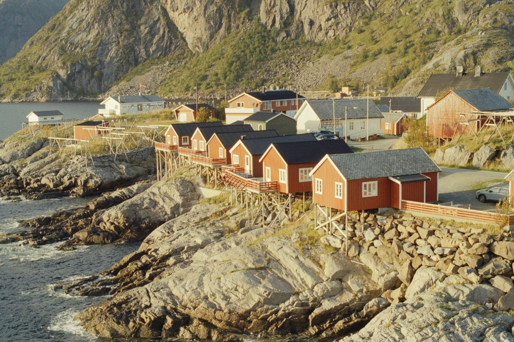

Portfolio fotografií – Michal Vítek
 0004
0004 0005
0005 0006
00060007
 0012
0012 0013
0013 0014
00140015
0018
 0019
00190020
 0024
00240033
 0034
0034 0001
0001 0009
0009 0011
0011 0016
0016 0021
00210022
0025
 0026
0026 0027
0027 0028
00280029
 0030
0030 0031
0031 0041
0041 0042
00420003
0008
 0017
0017 0023
00230035
 0036
0036 0037
0037 0038
0038 0039
00390043
 0032
00320002
0010
 0040
0040